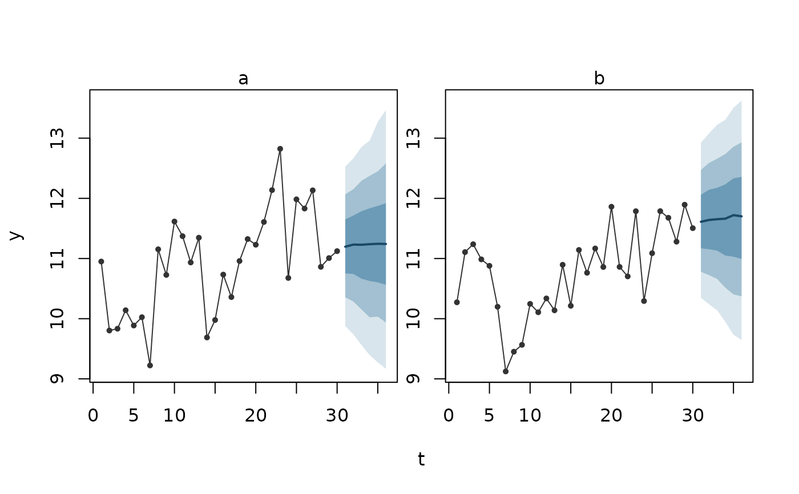

Fan chart of predictive distributions over time
Source:R/ilm_plot_fan.R, R/zzz-iml-aliases.R
ilm_plot_fan.RdDraws each row's predictive median as a line, with nested bands for the
central intervals at levels, against time and optionally one panel per
series. The observed history can be drawn before them. The bands are read
from each row's own predictive distribution, so for a forecast they widen
with the horizon as far as the model says the future is uncertain.
Usage
ilm_plot_fan(
pred,
time,
group = NULL,
history = NULL,
response = NULL,
levels = c(0.5, 0.8, 0.95),
...
)Arguments
- pred
A predictive distribution, class
"ilm_pred", whose rows have a time column (and a series column, for panels).- time
The name of the time column, in the prediction's rows and in
history.- group
The name of the series column, for one panel per series, or
NULLfor a single panel.- history
Optional data frame of observed values to draw before the predictions, with the
time,groupandresponsecolumns.- response
The name of the response column in
history.- levels
Coverages of the central intervals drawn as bands.
- ...
Passed to
tinyplot::tinyplot(): for examplefacet.args = list(free = TRUE)to give each series' panel its own y scale, orylimto set the scale.
Value
The data behind the plot, invisibly: one row per history row and predicted row, with the observed value, the median, and each band's limits.
Reading the plot
Time runs along the horizontal axis, with one panel per series when group
is given.
The grey points and line are the observed history.
The dark line is each row's predictive median: half the predicted outcomes fall above it, half below.
The shaded bands are the central intervals, darkest for the narrowest (by default 50%, then 80% and 95%). If the model is right, about that share of future outcomes fall inside each band.
Bands that widen with the horizon show the model's uncertainty about the future growing. A band that is too narrow or too wide is something only outcomes can show: score the forecasts against them with
ilm_scores.ilm_pred(), or check their coverage with ilm_calibration().
See also
ilm_forecast(), which makes the forecast; ilm_future() for the
rows a forecast needs.
Examples
set.seed(1)
d <- data.frame(id = factor(rep(c("a", "b"), each = 30)), t = rep(1:30, 2))
d$y <- 10 + ave(rnorm(60, 0, 0.4), d$id, FUN = cumsum) + rnorm(60, 0, 0.5)
fit <- illume::ilm_model(y ~ 1, data = d, family = "gaussian",
ar = illume::ilm_rw1(~ t | id), verbose = FALSE)
fc <- ilm_forecast(fit, ilm_future(d, time = "t", group = "id", h = 6,
response = "y"), nsim = 300)
ilm_plot_fan(fc, time = "t", group = "id", history = d, response = "y")
